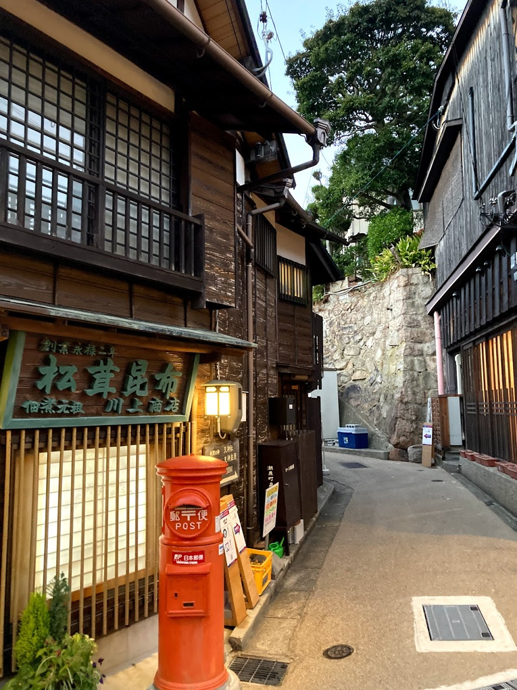
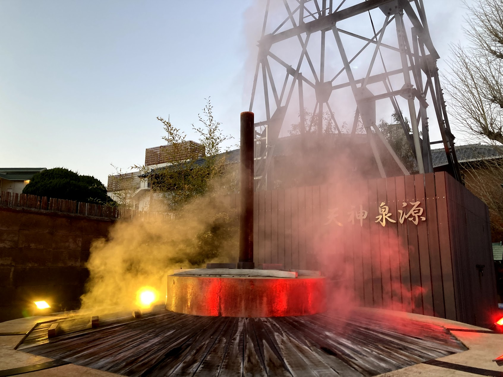
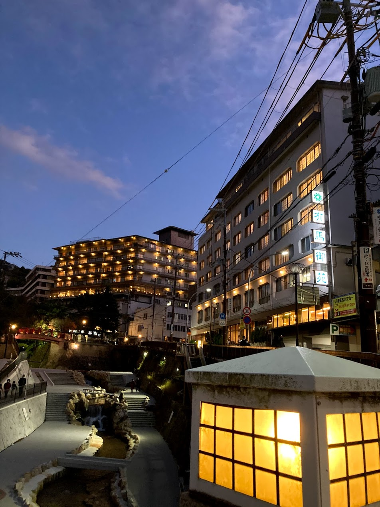

神戸散歩
～有馬温泉編～
12/4 2020
カテゴリー：サークル長の自主練
 有馬温泉 ねね橋
有馬温泉 ねね橋
昨今の新型コロナウイルス感染症により、依然として本サークルは活動は制限されていますので、個人的に散歩をしてきました。その時巡ったところや名所をご紹介できればなと思います。
上の写真は日本三名泉の一つ「有馬温泉」にある”ねね橋”です。
本来であれば城崎温泉に行きたかったところですが、遠かったので、諦めてしまいました。（涙）神戸の友人からも「せっかく行くんやし、城崎温泉行ったらよかったやん」と言われてしまいました… かの有名な交通系YouTuberスーツさん（横浜国立大学・経営学部出身）も城崎温泉に行っていたので、また時間があるときに行ってみたいと思います。
スーツ 旅行 チャンネル 城崎温泉での旅行の様子 流石観光スポットということ同じくらいの年齢の男女（多分大学生くらい？）からお年寄りまで幅広い年代の人たちが訪れていました。
最近では飲食店が増えたようで食べ歩きをする若者も増えたみたいです。現地の人から聞きました。神戸や大阪の人にとっても日帰りで来られる立地にあるので、そりゃあ皆行きますわ(笑)
昭和感たっぷりの街路を歩いていると今じゃなかなかお目にかかれない昭和レトロな赤ポストを発見。少し過去へタイムトラベルした気持ちになりますね～
 天神泉源（金泉源）赤ポストを進んだ先にもくもくと湯気が立ちこんでいる神社を発見。ライトアップもされており、夜に来たらもっと幻想的な風景を楽しめただろうになと少々後悔しました。
有馬川
夕食を食べ終わり、ふらふらと散歩していたら、日も暮れいい具合に夜景が綺麗に見える時間帯になってきました。都会の日々に疲れた時に温泉に入ることはとてもいいことですね～
実はこの後、大学の課題やらで旅館に缶詰になっている自分がいるとは想像したくなかったです（涙）今日中に課題を終わらせ、明日は下山し、神戸市中心部へ行きたいと思います！
←後編へ続く 前の記事 →